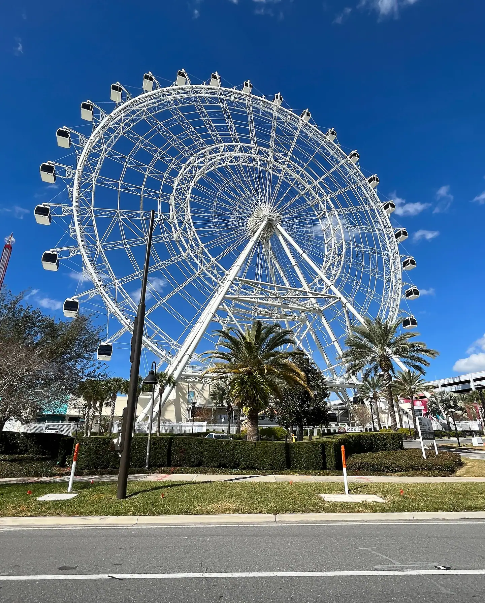

Blue Man Group
Three blue performers, no words, and a room full of paint drums, PVC pipe instruments, and giant balloons bouncing over the crowd.

407 FYI · International Drive Family Guide
407 FYI · A Family GuideThe corridor was built for visiting families, and it does not pretend otherwise. This page is the family layer of it: the anchors worth planning around, the backups for when the weather turns, and the food that keeps the day moving.
Every pick below carries the guide’s family tag in the International Drive district, from the SeaWorld end of the corridor to the outlet end. Each one opens its full card in the finder, with its address and details.
The Orlando Eye, on International Drive. Photo: “La grande roue d'Orlando (Floride) en février 2022” by Benoît Prieur, CC0, via Wikimedia Commons.
The Short Version
I-Drive rewards families who pick one anchor and let the block around it fill the day. ICON Park stacks the wheel, the aquarium, and the wax museum into a single walkable cluster. Pointe Orlando pairs dinner-hour energy with bowling, loaded shakes, and family-style Italian. The south end of the corridor belongs to SeaWorld, Aquatica, and Discovery Cove, full days that need no help from anyone.
The corridor’s other family skill is the save. Florida weather turns fast, and this street keeps an unusual share of its best family hours indoors: an upside-down house, a vast indoor park of karts and games and rides, rooms built for the camera roll. When the sky closes, the day does not have to.
The rule: one anchor, one cluster, one indoor backup. Choose the anchor first, eat inside its orbit, and keep an indoor name in your pocket for the afternoon storm.
The Picks
The complete family list for the district, in the guide’s own order. Tap any name to open its own page.
Three blue performers, no words, and a room full of paint drums, PVC pipe instruments, and giant balloons bouncing over the crowd.
An open-air stretch of I-Drive with no gate and no ticket to wander in, anchored by the 400-foot Orlando Eye turning above the night lights.
Guests keep landing on the same word for Dezerland: huge.
Fun Spot is the old-school midway the mega-parks left behind: family-owned since 1997, with White Lightning's wooden coaster, the Freedom Flyer, multi-level go-kart tracks and the SkyCoaster, and lines guests describe as little to none.
Andretti runs on competition: electric SuperKarts on a multi-level indoor track, two levels of laser tag, boutique bowling, F1 simulators, VR bays and a ropes course with a curved zipline, plus a scratch-kitchen restaurant and full bar under the same roof.
The upside-down house on International Drive has been a landmark since 1998, and inside it is all hands-on: a hurricane shack, an earthquake simulator, a bed of nails, a bubble lab, laser tag and a glow-in-the-dark ropes course past the inversion tunnel.
SeaWorld pairs a working marine park with serious coasters: Mako's airtime hills, the Pipeline surf coaster and the family coaster Penguin Trek, with orca presentations and a shark tunnel slowing the pace between rides.
Aquatica is SeaWorld's water park with animals threaded through it: the Dolphin Plunge sends you through a clear tube while Commerson's dolphins streak past, and Roa's Rapids runs faster than a lazy river should.
Discovery Cove is the calm splurge on I-Drive: a reservation-only day resort where attendance is capped and the water stays clear.
A full-size Spanish galleon sits in an indoor lagoon on Carrier Drive while acrobats swing overhead, swords clash and cannons flash around the tables.
Inside WonderWorks on I-Drive, the pizza keeps coming and a volunteer gets pulled into the bit, and the room is laughing before the trick even lands.
At ICON Park, this is a camera-first playground of optical illusions, from the Ames room that shrinks your friends to the vortex tunnel that scrambles your balance.
Sharks and rays pass overhead in the 360-degree ocean tunnel while you stay dry, unhurried and air conditioned.
On Del Verde Way off I-Drive, Villatel is built for the big-group trip: themed villas sleeping four to nine bedrooms, each with its own pool, plus the Aqua Bay water park on site.
Expedition Odyssey: Fire & Ice is SeaWorld's Arctic flying theater, lifting riders over polar landscapes shot on film in Iceland with real animals rather than rendered ones.
A low-key hotel water park on International Drive that sells day passes, so no resort stay is needed.
An I-Drive original since the 1990s that treats dinner like an art opening, with resident artists painting at easels and the walls doubling as the gallery.
Gordon Ramsay's British chippy at ICON Park, done up like a Union Jack beach shack with counter service and a short menu.
Family-style Italian at Pointe Orlando, built for the table that cannot agree on one dish.
A retro diner at Pointe Orlando where the shakes arrive wearing their own desserts.
Bowling, laser tag, billiards, a ropes course, and a big arcade under one roof at Pointe Orlando, with lane-side food and a full bar keeping groups fed between games.
The wax museum inside ICON Park, where guests pose with pop stars, superheroes, sports legends, and a Justice League lineup made for group photos.
A convention hotel with a resort hiding inside it, linked to the South Concourse by its own pedestrian bridge.
A beachy patio spot in the Marketplace at Dr. Phillips.
Disney's own closeout store inside Orlando International Premium Outlets, where cleared park and resort merchandise lands at outlet prices.
A burger bar dressed as a 1920s service station, parked at Orlando International Premium Outlets, with vintage Fords overhead and shop rags for napkins.
The quieter outlet run on the north end of I-Drive: a smaller, open-air center anchored by a Nike Clearance store, with Levi's, Adidas, Skechers and Carter's behind it.
Twisted farm food in portions that redraw the plate, a short hop from the north I-Drive outlets.
Before You Go
Keep Going
This page is one cut of the guide: family in International Drive. The district story covers the neighborhood itself, and the finder carries every place in the guide with search, filters, and a map.